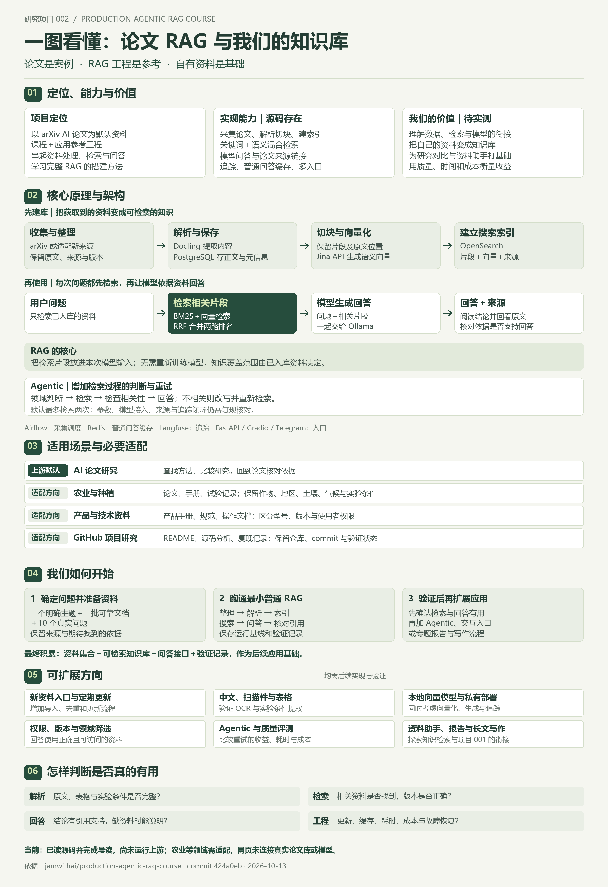

定位与价值
这是以 arXiv AI 论文为默认资料的课程与参考工程。论文是示例领域，采集、文档处理、检索、模型问答和维护的方法可用于构建自己的知识系统。它的实际收益需要用我们的资料和问题验证。
论文是它的默认应用场景，搭建完整 RAG 的方法和架构是我们主要参考的价值。以此为基础，逐步把自己的资料变成能查询、能回答、能追溯依据的知识系统。
把我们的讨论归纳成一张图，
从项目定位一直看到使用与扩展。
默认收集 arXiv AI 论文，处理文档、建立索引，再检索片段供模型回答。当前能力来自源码分析，运行效果待验证。
学习资料、数据库、搜索索引、模型、追踪和缓存如何衔接。个人价值需要通过检索质量、核查时间与成本来衡量。
先确定主题并获取可靠资料，再整理、解析、建库、查询与核对。农业等新领域需适配资料入口、字段和领域规则。

这是以 arXiv AI 论文为默认资料的课程与参考工程。论文是示例领域，采集、文档处理、检索、模型问答和维护的方法可用于构建自己的知识系统。它的实际收益需要用我们的资料和问题验证。
建库：收集整理 → Docling 解析 → PostgreSQL 保存正文与元信息 → 切块 → Jina 向量化 → OpenSearch 索引。问答：用户问题 → BM25 与向量检索 → RRF 融合排名 → 相关片段与问题一起交给 Ollama → 回答与来源。
RAG 把资料放进本次模型输入，无需为这条链路重新训练模型。知识覆盖范围取决于已入库资料，原文用于核对模型结论。
源码包含论文采集、解析切块、混合检索、普通问答和来源链接，以及追踪、普通问答缓存与多个入口。Agentic 增加领域判断、相关性检查、查询改写和重试，默认最多检索两次；参数、模型接入、来源与追踪闭环仍需复现核对。
Airflow 负责采集调度，Redis 缓存普通问答，Langfuse 追踪过程；FastAPI、Gradio 和 Telegram 提供使用入口。
上游默认用于 AI 论文研究。农业可接入论文、种植手册和试验记录，保留作物、地区、土壤、气候与实验条件；技术资料要区分型号、版本与权限；项目研究要保留仓库、commit 和验证状态。新领域需要调整资料入口、解析规则、检索字段与领域判断。
选择一个明确主题，准备一批可靠文档与 10 个真实问题，记录来源和期待找到的依据。跑通整理、解析、索引、搜索与普通问答，逐条核查引用。保存基线和验证记录后，再扩展 Agentic、交互入口或报告生成。
最终积累的是资料集合、可检索知识库、问答接口和验证记录，可继续作为后续应用的基础。
新资料入口和定期更新；中文、扫描件、表格与 OCR；本地向量模型和私有部署；权限、版本与领域筛选；Agentic 与普通 RAG 对比评测；知识库问答、专题报告和与项目 001 长文写作的衔接。以上均为后续实现和验证方向。
解析是否完整？检索是否找到正确资料与版本？回答结论是否得到引用支持，资料不足时是否说明？新资料更新、缓存失效、耗时、成本与故障恢复是否可接受？当前已完成源码研究与导读，尚未运行上游；本页未连接真实论文库或模型。
把资料处理和模型调用连成流程，
让研究成果更容易积累与复用。
自动采集论文、解析 PDF、切分内容并建立索引。
结合关键词与语义检索，把相关片段提供给模型。
Agentic 流程评估资料相关性，必要时改写问题再检索。
已有追踪、普通问答缓存，以及网页和 Telegram 入口。
把研究笔记、论文、技术文档放进持续维护的知识库，按问题找到有用内容。
检查资料是否找对、引用是否支持回答、重试是否有效，而不只观察是否生成了文字。
适配后可探索资料助手、专题报告、研究对比，以及检索依据与长文生成的衔接。
当前价值判断来自源码研究；实际节省的时间、回答质量与运行成本，需要用我们的资料和问题验证。
点击每一步，查看准备内容、处理过程
和这一阶段应该拿到的结果。
围绕明确主题收集论文、研究笔记或技术文档。上游自带 arXiv AI 论文采集，其他领域需要适配来源或增加文件导入入口。
研究主题、资源入口、资料范围与文件。
文件是否完整？资料是否覆盖想问的问题？来源能否回溯？
RAG 的关键：把找到的资料作为本次模型输入。检索决定模型看到什么，原文与来源帮助我们核对回答。
底层流程可复用。换领域时，
资料入口、文档结构和领域规则一起调整。
围绕作物、地区和研究主题收集论文，保留实验条件。用检索辅助理解已有研究，再回到原文核对。
接入农业资料或增加本地 PDF 导入；调整领域校验；验证中文、表格与实验条件提取。
已获取的农业论文 PDF、研究笔记、可靠的技术资料。
题名、作者、年份、来源、作物、地区与原文位置；缺失信息明确标注。
回答能否找到原文支持？不同地区与实验条件是否被混淆？表格数据是否完整？
这些论文分别比较了哪些灌溉方式，实验条件有什么差异？
找到灌溉试验相关内容，展示资料标题、章节和来源位置，由我们阅读与比较。
知识库包含内容与搜索结构，
模型在查询时使用检索到的资料。
| 设置 | 当前配置 | 实际意义 |
|---|---|---|
| 资料领域 | arXiv / cs.AI | 农业等领域需要适配来源与领域规则 |
| 切块 | 章节优先；词数回退 600 / 重叠 100 | 保留内容结构，中文处理需另行验证 |
| 向量化 | Jina v3 / 1024 维 | 模型与索引维度匹配，更换后重新向量化 |
| 问答检索 | 默认 top_k = 3，混合检索 | 请求 3 个片段，可能来自同一篇论文 |
| 回答模型 | Ollama / llama3.2:1b | 生成质量取决于模型与检索资料 |
| 普通问答缓存 | 精确匹配 / 默认 6 小时 | 相同问题与参数可复用；更新资料后的失效待测 |
领域校验 → 检索 → 资料相关性检查 → 相关则回答；不相关则改写并重试。默认最多检索两次。
固定版本还有参数传递、来源返回与追踪关联缺口。Gradio 与 Telegram 当前走普通 RAG。上游功能均待实际复现。从我们真正要问的问题出发，
用一批资料验证检索与引用。
选择一个明确主题，准备一批真实资料与 10 个实际问题。整理来源、版本和原文位置，明确期待找到什么。
产物：资料清单 + 问题清单在独立环境固定上游版本，适配资料入口，跑通解析、索引、搜索与普通问答。逐条核对回答和原文。
产物：可重复的查询与验证记录验证 Agentic 与运行维护后，再探索专题资料助手、研究报告，以及与项目 001 长文生成流程的衔接。
产物：有依据、可核验的应用流程勾选只是记录准备进度，不代表系统已通过验证。
准备进度保存在当前浏览器；可以下载成文档。
资料经过解析、切块和索引后才进入搜索范围。新增资料也要走同样的处理流程；解析失败或未建立索引的内容不会自动可用。
可以沿用底层架构。默认采集与领域校验围绕 AI 论文，需要接入农业资料或增加文件导入，调整领域规则，并验证中文、表格和实验条件提取。这里展示的是适配方案，尚未构建农业知识库。
检索范围取决于已入库并建立索引的资料。提示词要求依据提供的片段回答，但提示词本身不能证明引用正确，应回到原文核对。
Ollama 在本地运行，当前 Jina 客户端把问题和论文文本发送到外部向量化 API。私有资料的部署方案需要同时考虑检索、模型和追踪服务。
当前是理解汇总与使用规划页。步骤、场景切换和准备清单可交互；没有接入数据库、真实论文检索或模型。真实系统需要完成独立环境复现与资料入库。
后续验证：环境与采集、解析与索引、检索质量、回答引用、Agentic 分支、缓存与故障恢复。仓库中已整理 16 项复现任务；上游运行效果尚未验证。